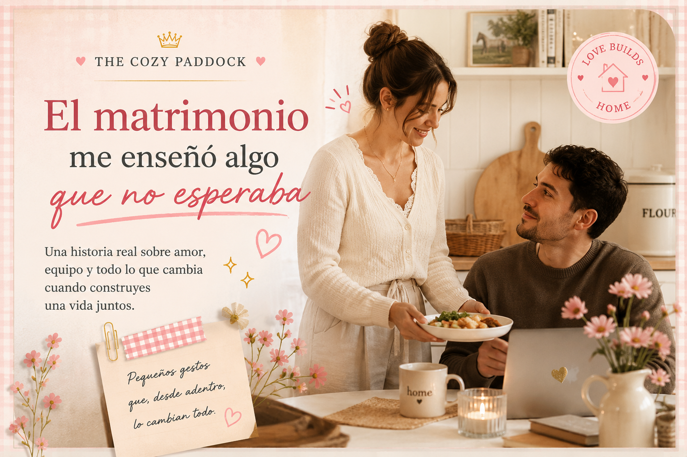

El matrimonio me enseñó algo que no esperaba
Si me hubieran preguntado hace algunos años si quería casarme, probablemente habría respondido que no.
Y no porque no creyera en el amor. Creía en el amor.
Lo que no quería era desaparecer dentro de una relación.
Durante muchos años asocié la idea del matrimonio con una mujer que dejaba de ser muchas otras cosas. Una mujer que renunciaba a parte de sí misma para construir la vida de alguien más. Que cargaba con la casa, con la organización del hogar, con las responsabilidades invisibles. Y aunque nunca lo decía en voz alta, había una parte de mí que sentía que convertirse en esposa era dar un paso atrás como mujer.
Recuerdo que durante muchos años estaba completamente convencida de que no quería casarme. No era miedo al compromiso ni que no creyera en el amor. Simplemente, en mi cabeza, ser esposa significaba dejar de ser muchas otras cosas que para mí eran importantes. Sentía que una mujer, al casarse, inevitablemente terminaba poniendo su vida en segundo plano para construir la de alguien más. Y yo no quería eso para mí.
De hecho, cuando fui yo la que, después de varios años de noviazgo, le dijo a mi hoy esposo que era momento de pensar en el siguiente paso de nuestra relación, lo primero que me respondió fue, entre risas:
—¿Tú no eras la que no quería casarse?
Y tenía toda la razón.
Si alguien me hubiera dicho unos años antes que esa conversación iba a salir de mi boca, probablemente me habría reído. Porque durante mucho tiempo rechacé la idea del matrimonio, no por lo que realmente era, sino por lo que yo creía que significaba.
Muchos años antes de conocer a mi esposo tuve una relación que marcó profundamente mi forma de entender el amor. Poco a poco empecé a construir mi vida alrededor de otra persona. Mis planes dependían de los suyos, mis sueños empezaron a mezclarse con los de él y, sin darme cuenta, dejé de preguntarme qué quería yo. Cuando esa relación terminó, no solo tuve que superar una ruptura. Tuve que descubrir quién era cuando no vivía para alguien más.
Y me prometí algo. Nunca más volvería a perderme dentro de una relación.
Durante años construí una vida de la que me siento profundamente orgullosa. Estudié, viajé, viví sola en otro país, construí una carrera, aprendí a resolver mis propios problemas y me convertí en esa persona a la que todos buscan cuando necesitan ayuda.
La fuerte. La organizada. La que encuentra soluciones. Y creo que muchas personas todavía me ven así.
Lo curioso es que muy pocas veces alguien se pregunta quién sostiene a la persona que siempre está sosteniendo a los demás. Porque, aunque me gusta cuidar de la gente que amo, también cansa. A veces también quiero que alguien cuide de mí.
Y creo que ese fue el cambio más grande que produjo el matrimonio en mi vida. No sucedió el día de la boda. No hubo un momento dramático donde todo cambió. Fue algo mucho más silencioso.
Un día mi esposo llegó con una piedra para cambiar el filtro del agua de la nevera. Yo ni siquiera me había percatado que eso había que cambiarlo cada cierto tiempo. Otro día bajó al parqueadero porque tenía que ponerle un líquido al motor del carro. Jamás había hecho eso con ninguno de mis carros.
Mientras tanto, yo era la que notaba cuando faltaba algo en la despensa, la que estaba pendiente de pagar los servicios, la que veía esa pequeña mancha en la cocina que parecía invisible para cualquier otra persona.
Poco a poco entendí que los dos estábamos cuidando la misma casa. Solo que la mirábamos desde lugares diferentes. Y entonces pasó algo que me hizo reír de mí misma.
Un día le serví el almuerzo a mi esposo. Mientras llevaba el plato a la mesa pensé: "¿No que tú jamás le ibas a servir la comida a un hombre?" Y me dio hasta pena con mi yo del pasado.
Porque durante años pensé que ese gesto representaba sumisión. Hoy representa algo completamente distinto. Representa amor. Representa cuidado. Representa gratitud. Y, sobre todo, representa una decisión completamente libre.
Lo más curioso es que, si alguien entrara a mi casa justo en ese momento, probablemente podría pensar: "Mira, ahí está él sentado mientras ella le sirve la comida." Pero esa persona no vería todo lo demás. No vería que mi esposo es quien limpia la casa. No vería que muchas veces él se ocupa de cosas que yo ni siquiera sabía que existían. No vería las veces que me dice: "De eso me encargo yo." No vería que mientras yo estoy pendiente de unas cosas, él está pendiente de otras.
Y entendí algo que nunca imaginé. Los mismos actos pueden significar cosas completamente distintas dependiendo de la relación en la que ocurren. Desde afuera pueden parecer un rol impuesto. Desde adentro pueden ser una demostración de amor.
Creo que antes de casarme confundía independencia con no necesitar a nadie. Sentía que tenía que demostrar constantemente que podía hacerlo todo. Que podía resolverlo todo. Que no necesitaba ayuda. Y sí. Todavía puedo hacerlo. Todavía soy una mujer independiente. Todavía trabajo, tengo proyectos, opiniones, sueños y metas propias. Casarme no borró nada de eso.
Lo que cambió fue que dejé de sentir que tenía que demostrarlo todo el tiempo. Descubrí que también existe una enorme tranquilidad en saber que hay alguien que puede sostener algunas cosas para que tú descanses un poco. Y tú hacer exactamente lo mismo por esa persona. No porque uno sea menos capaz que el otro. Sino porque así se siente el trabajo en equipo.
Tal vez por eso hoy entiendo un poco mejor cuando algunas personas hablan de energía masculina y energía femenina. No porque crea que exista una única manera correcta de vivir un matrimonio. Ni porque piense que todas las parejas deban organizarse igual. Al contrario. Cada familia encuentra su propio equilibrio.
Lo que cambió fue mi manera de interpretar ciertas cosas. Entendí que permitir que alguien cuide de mí no me hace menos fuerte. Y cuidar de la persona que amo no me hace menos libre.
Si hoy pudiera sentarme a hablar con la Sheyla de hace algunos años, no intentaría convencerla de cambiar de opinión. Solo le diría algo muy sencillo. Que no juzgue las decisiones de otras mujeres desde afuera. Porque nunca sabemos qué significado tienen esos pequeños gestos dentro de una relación.
Hay mujeres que jamás querrán vivir un matrimonio como el mío. Y está bien.
Hay mujeres que se sienten plenamente identificadas con roles mucho más tradicionales. Y también está bien.
La vida me ha enseñado que existen tantas maneras de construir un matrimonio como parejas en el mundo. Lo único que cambió fue mi corazón. Y descubrí que algunas cosas que antes rechazaba con todas mis fuerzas, cuando nacen del amor, del respeto y de la libertad, dejan de sentirse como una obligación.
Y empiezan a sentirse como hogar.
About The Cozy Paddock
The Cozy Paddock es un espacio donde la Fórmula 1 se vive desde una perspectiva más suave y femenina.
Creado para chicas que quieren entender, disfrutar y experimentar el deporte de una forma simple, acogedora y bonita.
The Cozy Paddock is a space where Formula 1 meets a softer, more feminine perspective.
Created for girls who want to understand, enjoy, and experience the sport in a simple, cozy, and beautiful way.
Autoras

Mery Ramirez

Sheyla Franco

Mayra Torreblanca